技术实现
Protocol
gRPC
DiscoveryX 使用 gRPC 作为内部及开放API的数据通信协议，Akka gRPC提供了 gRPC/Protobuf 与 Akka 的集成。
Naming服务可通过gRPC服务描述语言进行定义，Akka gRPC将生成相应的Scala/Java代码及服务接口。
service NamingService {
// 查询实例
rpc QueryInstance (fusion.discoveryx.model.InstanceQuery) returns (fusion.discoveryx.model.NamingReply) {
}
// 注册实例
rpc RegisterInstance (fusion.discoveryx.model.InstanceRegister) returns (fusion.discoveryx.model.NamingReply) {
}
// 修改实例
rpc ModifyInstance (fusion.discoveryx.model.InstanceModify) returns (fusion.discoveryx.model.NamingReply) {
}
// 删除实例
rpc RemoveInstance (fusion.discoveryx.model.InstanceRemove) returns (fusion.discoveryx.model.NamingReply) {
}
// 监听服务事件
rpc ListenerService (fusion.discoveryx.model.ServiceListener) returns (stream fusion.discoveryx.model.ServiceEvent) {}
// 实例心跳消息。namespace, serviceName, ip, port, instanceId等使用metadata（HTTP Header发送）
//- `x-discoveryx-namespace`：命名空间
//- `x-discoveryx-service-name`：服务名
//- `x-discoveryx-ip`：服务监听IP地址
//- `x-discoveryx-port`：服务监听网络端口
//- `x-discoveryx-instance-id`：实例ID
rpc Heartbeat (stream fusion.discoveryx.model.InstanceHeartbeat) returns (stream fusion.discoveryx.model.ServerStatusBO) {
}
// 查询服务状态
rpc ServerStatus (fusion.discoveryx.model.ServerStatusQuery) returns (fusion.discoveryx.model.ServerStatusBO) {
}
}Protobuf
DiscoveryX 使用 Protobuf 来定义和序列化数据消息，服务需要的请求参数、响应结果通过Protobuf定义，它将被自动编译并生成相应的case class。
// 健康检查方式
enum HealthyCheckMethod {
NOT_SET = 0;
CLIENT_REPORT = 1;
SERVER_SNIFF = 2;
}
enum HealthyCheckProtocol {
UNKNOWN = 0;
UDP = 1;
TCP = 2;
HTTP = 3;
}
message Instance {
// unique id of this instance.
string instance_id = 1;
// instance ip
string ip = 2;
// instance port
int32 port = 3;
// instance weight
double weight = 4;
// instance health status
bool healthy = 5;
// If instance is enabled to accept request
bool enabled = 6;
// If instance is ephemeral
bool ephemeral = 7;
// user extended attributes
map<string, string> metadata = 8;
// Healthy check method, the default value is HealthyCheckMethod.CLIENT_REPORT
HealthyCheckMethod healthy_check_method = 9;
// Healthy check per N seconds
int32 healthy_check_interval = 10;
// Unhealthy check count
int32 unhealthy_check_count = 11;
// Healthy check protocol
HealthyCheckProtocol protocol = 12;
// Whether TLS(HTTPS) is used for gRPC connection, the default value is false.
bool use_tls = 13;
// HTTP healthy check uri path.
string http_path = 14;
}gRPC PowerApi
Akka gRPC在生成服务时有两种选择：
- 配置服务，生成的Scala/Java服务签名与 gRPC 定义一一对应
- PowerApi，生成的Scala/Java服务多带一个
metadata参数，可在定义的数据请求这外使用HTTP Header。这很有用，意味着通常使用的基于 Cookie 和 HTTP Header 的用户认证、Trace等技术可继续使用。
对于 heartbeat 这个服务，它的服务端实现如下：
override def heartbeat(
in: Source[InstanceHeartbeat, NotUsed],
metadata: Metadata): Source[ServerStatusBO, NotUsed] = {
try {
val namespace = metadata
.getText(Headers.NAMESPACE)
.getOrElse(throw HSBadRequestException(s"Request header missing, need '${Headers.NAMESPACE}'."))
// ....
// ....
in.map { _ =>
namingRegion ! ShardingEnvelope(entityId, Heartbeat(namespace, serviceName, instanceId))
ServerStatusBO(IntStatus.OK)
}
} catch {
case e: Exception =>
logger.warn(s"Receive heartbeat message error: $e")
Source.single(ServerStatusBO(IntStatus.BAD_REQUEST))
}
}
对于服务心跳保持这个服务，gRPC 的 stream 特性可实现全双工通信。一旦请求建立连接，我们不需要在每个心跳请求里都重复包含namespace、serviceName、ip和port字段，只需要在第一次请求时发送即可，之后的每次心跳只需要发送一个空请求即可。客户端调用代码使用 StreamResponseRequestBuilder 将参数通过HTTP Header传入。
def heartbeat(in: Source[InstanceHeartbeat, NotUsed], inst: Instance): Source[ServerStatusBO, NotUsed] = {
namingClient
.heartbeat()
.addHeader(Headers.NAMESPACE, inst.namespace)
.addHeader(Headers.SERVICE_NAME, inst.serviceName)
.addHeader(Headers.IP, inst.ip)
.addHeader(Headers.PORT, Integer.toString(inst.port))
.addHeader(Headers.INSTANCE_ID, inst.instanceId)
.invoke(in)
}
Akka HTTP
通过 Akka HTTP 发布 gRPC 服务
gRPC当前是基于HTTP 2的，Akka HTTP也支持HTTP 2，我们可以通过 Akka HTTP 来发布 gRPC 服务。通过 [ServiceName]Handler 提供的方法来构造 gRPC handler，有两种方式：
apply，返回一个函数，签名：HttpRequest => Future[HttpResponse]partial，返回一个偏函数，签名：PartialFunction[HttpRequest, Future[HttpResponse]]
val managementService = new ManagementServiceImpl()
val handler: HttpRequest => Future[HttpResponse] = ManagementServiceHandler(managementService)
val grpcHandler: PartialFunction[HttpRequest, Future[HttpResponse]] = ManagementServiceHandler.partial(managementService)
连接多个 gRPC handler：
ServiceHandler.concatOrNotFound(grpcHandlers: _*)
始终使用 .partial 构造单个 gRPC 服务 handler，再用 ServiceHandler.concatOrNotFound() 合并起来
给 gRPC 服务提供 REST API
Directive 指令
Akka HTTP 提供了 Directive（指令）DSL来构造 HTTP API 路由。
import fusion.discoveryx.server.util.ProtobufJsonSupport._
def openRoute: Route = pathPrefix("config") {
pathPost("GetConfig") {
entity(as[ConfigGet]) { in =>
complete(configService.getConfig(in))
}
} ~
pathPost("PublishConfig") {
entity(as[ConfigItem]) { in =>
complete(configService.publishConfig(in))
}
} ~
pathPost("RemoveConfig") {
entity(as[ConfigRemove]) { in =>
complete(configService.removeConfig(in))
}
}
}
Directive 可以组合
def pathPost[L](pm: PathMatcher[L]): Directive[L] = path(pm) & post
Marshal/Unmarshal
Marshal/Unmarshal 实现类与 HTTP entity 自动转换，这里
private val jsonStringUnmarshaller =
Unmarshaller.byteStringUnmarshaller.forContentTypes(unmarshallerContentTypes: _*).mapWithCharset {
case (ByteString.empty, _) => throw Unmarshaller.NoContentException
case (data, charset) => data.decodeString(charset.nioCharset.name)
}
private val jsonStringMarshaller =
Marshaller.oneOf(mediaTypes: _*)(Marshaller.stringMarshaller)
// HTTP entity => `A`
implicit def unmarshaller[A <: GeneratedMessage with Message[A]: GeneratedMessageCompanion](
implicit parser: Parser = ProtobufJson4s.parser): FromEntityUnmarshaller[A] =
jsonStringUnmarshaller.map(s => parser.fromJsonString(s)).recover(throwCause)
// `A` => HTTP entity
implicit def marshaller[A <: GeneratedMessage](
implicit printer: Printer = ProtobufJson4s.printer,
shouldWritePretty: ShouldWritePretty = ShouldWritePretty.False): ToEntityMarshaller[A] =
shouldWritePretty match {
case ShouldWritePretty.False => jsonStringMarshaller.compose(a => JsonMethods.compact(printer.toJson(a)))
case ShouldWritePretty.True => jsonStringMarshaller.compose(a => JsonMethods.pretty(printer.toJson(a)))
}
Actor
Protobuf与Typed Actor
message NamingManagerCommand {
option (scalapb.message).extends = "fusion.discoveryx.server.naming.NamingManager.Command";
option (scalapb.message).companion_extends = "fusion.protobuf.ActorRefCompanion";
string reply_to = 1 [(scalapb.field).type = "akka.actor.typed.ActorRef[NamingResponse]"];
oneof cmd {
ListService list_service = 2;
GetService get_service = 3;
CreateService create_service = 4;
RemoveService remove_service = 5;
ModifyService modify_service = 6;
}
}option (scalapb.message).extends =使消息符合 Typed Actor 的消息类型限制。
ActorRefCompaion 提供了reply_to字段从 String 到 ActorRef[NamingResponse] 的相互转换功能。
trait ActorRefCompanion {
private def resolver: ActorRefResolver = ActorRefResolver(ActorSystemUtils.system)
implicit def actorRefTypeMapper[T]: TypeMapper[String, ActorRef[T]] = {
TypeMapper[String, ActorRef[T]] { str =>
if (StringUtils.isBlank(str)) ActorSystemUtils.system.deadLetters[T]
else resolver.resolveActorRef[T](str)
} { ref =>
ref.path.elements match {
case List("deadLetters") => "" // resolver.toSerializationFormat(ActorSystemUtils.system.deadLetters[T])
case _ => resolver.toSerializationFormat(ref)
}
}
}
}
多个 gRPC 服务消息通过 oneof 特性合并到一个 protobuf 消息里，这样通常有两个好处：
- 减少需要通过
option (scalapb.message).extends定义 protobuf 消息扩展某个接口的次数 - 这样可以减少需要通过
[(scalapb.field).type]自定义ActorRef[T]转换的次数。
message NamingResponse {
int32 status = 1;
string message = 2;
oneof data {
ListedService listed_service = 3;
fusion.discoveryx.model.ServiceInfo service_info = 4;
fusion.discoveryx.model.Instance instance = 5;
}
}NamingResponse 作为 reply_to 里 ActorRef[T] 的类型参数，统一了 Actor 的响应。
- 因为 Actor 之间的异步特性，消息需要有状态码来表示处理是否成功？（
status、message）字段 - 通过
oneof封装实际的业务数据 - 通过包装，也更加符合通常REST风格API在响应结果时的风格。
Protobuf的oneof特性在序列化为JSON时，将没有外层的data。而是会将具体的消息类型字段返回。如：
{
"listedService": {
"serviceInfos": [],
"page": 1
}
}
Typed Actor
建议
- object（伴身对象）： 内定义消息类型
trait、EntityTypeKey、消息等 - class（同名类）： 定义具体的
Behavior，若Actor比较简单，也可以在object.apply方法里直接实现。 - 响应消息里标注操作是否成功
- 因为 Actor 是异步的，当
ask超时时异常不应被吞掉，应将异常转换并构造成消息返回
val response = try {
// ...
} catch {
case e => NamingResponse(IntStatus.INTERNAL_ERROR, e.getMessage)
}
replyTo ! response
////////////////////////////////////////////////////////////////////////////////
processCreate(in).recover {
case e => NamingResponse(IntStatus.INTERNAL_ERROR, e.getMessage)
}.foreach(response => replyTo ! response)
Cluster

Sharding
通过分片可横向扩展服务Actor（NamingManager、ServiceInstance、ConfigEntity、ConfigManager），一个entityId将保证同一时间内整个集群中只有一个实例，同时由集群选择在哪一个节点创建这个实例。
- 具备横向扩展能力
- 地址透明，不需要关心节点、网络地址等，通过
entityId构造ShardingEnvelope发送消息即可
ShardingEnvelope
向分片 Actor 发送消息的载体。NamingManager 可以保存它所能管理的所有 ServiceInstance 的 entityId（‘[namespace] [serviceName]’）。
不需要保存 ServiceInstance 的 Actor 引用，通过 ShardingEnvelope 和 entityId 即可向 ServiceInstance 发送消息。
ServiceInstance向ServiceManager注册自己
Singleton
Primary/Secondary 模式下用来实现 Primary 了。
Management（管理Actor）作为一个Singleton。
- 通过 Singleton Actor 来实现管理功能，保存所有有效的 namespace 列表
- 通过
ReadJournal查询、监听 Event ，管理NamingManager保存的serviceNames列表 和ConfigManager保存的configKeys列表
DistributeData
通过 DistributeData 在每个节点同步 namespace 列表，Config、Naming 相关功能校验 namespace 是否有效时实现本地校验（不需要通过网络请求）
Persistence
数据持久化
EventSourceBehavior
Command -> Event -> State
通过处理 Command 生成 Event，Event 将用于改变保存的 State （内存中），而每一个 Event 将被持久化。恢复时可通过重放 Event 来恢复 State。
- PersistenceId: 使用 EntityTypeKey.name 和 entityId 一起，保证持久化ID的唯一性
- 恢复时会自动重放所有持久事件
EventSourceBehavior 可以与普通的 Behavior 集成
- 与 ClusterSharding 集成，保证每个 PersistenceId 在整个集群内同一时间只会有一个实例
- 与 ClusterSingleton 集成，保证当前 PersistenceId 在整个集群内同一时间只有一个实例（
Management）
存储的选择
- JDBC：开发环境搭建方便，但性能略差
- Cassandra：性能好，开发环境稍麻烦
通过 Docker 来自动化创建开发环境
Snapshot
通过创建快照可以加快恢复时的速度。
快照被触发时将保存当前 State。恢复时将以被保存的 State 来初始化状态，同时将快照后的事件进行重放，以将持久化Actor恢复到其当前（既最新）的状态。
ReadJournal
CQRS架构的查询取端（也称“读取端”）。
写、读的分离。监听 Event 事件，更新ConfigManager保存的dataId列表
应通过 ReadJournal 将事件数据整合后迁移到查询端数据库（比如：Elasticsearch、RDBMS……），由另一个系统来提供更丰富的查询功能。